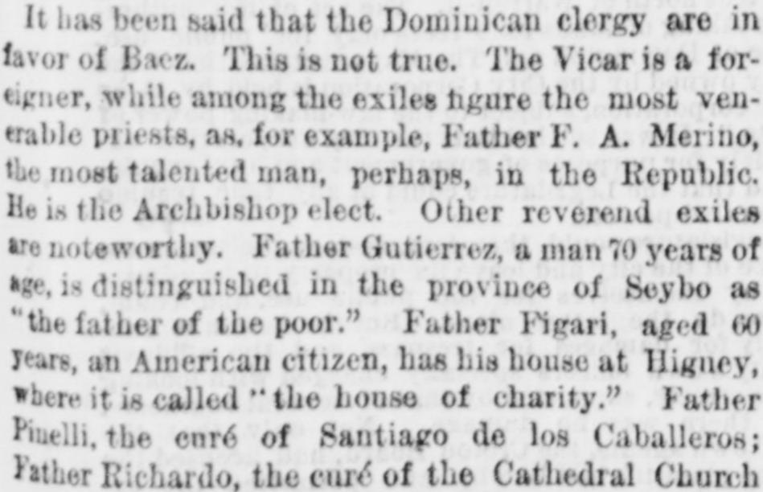
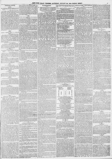

Father Gutierrez, a man 70 years of age, is distinguished in the province of SeyboEl padre Gutiérrez, hombre de 70 años de edad, se distingue en la provincia de Seybo
New-York Tribune. New York [N.Y.], January 29, 1870. Page 3. Published by New York Tribune. A daily newspaper, 1866–1924.New-York Tribune. New York [N.Y.], 29 de enero de 1870. Página 3. Publicado por New York Tribune. Periódico diario, 1866–1924. View the originalVer el original


See the full pageVer la página completaThe New-York Tribune reported on January 29, 1870, that numerous venerable priests and church figures—including Father F.A. Merino, Father Gutierrez, Father Figari, Father Piuelli, Father Richardo, and the late Father Moya—opposed President Baez, with only a foreign priest named Father Bougement supporting him. The newspaper stated that lacking native support, Baez relied on foreign figures such as Mr. Fabens, General Caseneau, and Mr. Hartmann Herzberg, who were attracted to San Domingo by the prospect of land and mine concessions and financial recompense.El New-York Tribune informó el 29 de enero de 1870 que numerosos eclesiásticos y prelados de gran predicamento —entre ellos el padre F. A. Meriño, el padre Gutiérrez, el padre Figari, el padre Pinelli, el padre Ricardo y el difunto padre Moya— militaban en la oposición contra el presidente Báez, contando este con el solitario apoyo de un clérigo extranjero llamado padre Bougement. El rotativo destacó que, huérfano de adhesión vernácula, Báez dependía de personajes foráneos como el Sr. Fabens, el general Cazneau y el Sr. Hartmann Herzberg, atraídos a Santo Domingo por la promesa de concesiones mineras, mercedes de tierras y granjerías pecuniarias.
FULL TEXT:TEXTO COMPLETO:
New-York Tribune January 29, 187029 de enero de 1870
ANNEXATION IN SAN DOMINGO.ANEXIÓN EN SANTO DOMINGO.
THE UNPOPULARITY OF BAEZ—HIS ATTITUDE TOWARD THE HAYTIANS—THE CLERGY OPPOSED TO HIM—HIS NEGOTIATIONS—ANOTHER GENERAL PRONOUNCED.LA IMPOPULARIDAD DE BÁEZ—SU ACTITUD HACIA LOS HAITIANOS—EL CLERO OPUESTO A ÉL—SUS NEGOCIACIONES—OTRO GENERAL PRONUNCIADO.
SAN DOMINGO, Jan. 13.—President Baez, seeing that his troops are deserting him and going over to the standard of Cabral, has announced in flattering terms to his employés, both civil and military, that they will continue to hold their present positions and draw large salaries from the United States as soon as the annexation project shall have been consummated. To Baez it is perhaps a matter of indifference whether he leaves his country under a load of compromises, or whether the United States shall so complicate their bargain with him that they will be obliged at last to retire discreditably from San Domingo, or endeavor to subjugate the restless Dominicans. But Baez will know how to profit by the dislike which his countrymen feel toward foreign domination. Since the fall of Salnave (who cannot hereafter demand of Baez the $25,000 he lent him to oppose the cession of Samana at a former day) Baez has caused the circulation of the report that the revolutionists under the command of Cabral and Pimentel are Cacos from Hayti. He urges that all Dominicans should rise up against this Haytian invasion, ignoring the fact that Haytian soldiers led by a Haytian general entered the capital with him as part of his own army. Does he not remember Gen. Barriere, whose men marched into the city of Domingo, shouting "Down with Cabral—away with the Ojos-Azules!" (blue-eyes, meaning Yankees.)SANTO DOMINGO, 13 de enero.—El presidente Báez, viendo que sus tropas lo están desertando y pasándose al estandarte de Cabral, ha anunciado en términos halagadores a sus empleados, tanto civiles como militares, que continuarán ocupando sus presentes posiciones y devengando grandes salarios de los Estados Unidos tan pronto como el proyecto de anexión haya sido consumado. Para Báez es quizás un asunto de indiferencia si deja su país bajo una carga de compromisos, o si los Estados Unidos complican de tal modo su trato con él que se vean obligados al fin a retirarse deshonrosamente de Santo Domingo, o a intentar subyugar a los inquietos dominicanos. Pero Báez sabrá sacar provecho del disgusto que sus compatriotas sienten hacia la dominación extranjera. Desde la caída de Salnave (quien en adelante no puede demandar de Báez los $25,000 que le prestó para oponerse a la cesión de Samaná en un día anterior) Báez ha hecho circular el informe de que los revolucionarios bajo el mando de Cabral y Pimentel son Cacos de Haití. Urge que todos los dominicanos se levanten contra esta invasión haitiana, ignorando el hecho de que soldados haitianos dirigidos por un general haitiano entraron en la capital con él como parte de su propio ejército. ¿No recuerda al general Barriere, cuyos hombres marcharon dentro de la ciudad de Santo Domingo, gritando «¡Abajo Cabral—fuera los Ojos-Azules!» (ojos azules, que significa yanquis.)
It has been said that the Dominican clergy are in favor of Baez. This is not true. The Vicar is a foreigner, while among the exiles figure the most venerable priests, as, for example, Father F. A. Merino, the most talented man, perhaps, in the Republic. He is the Archbishop-elect. Other reverend exiles are noteworthy. Father Gutierrez, a man 70 years of age, is distinguished in the province of Seybo as "the father of the poor." Father Figari, aged 60 years, an American citizen, has his house at Higney, where it is called "the house of charity." Father Pinelli, the curé of Santiago de los Caballeros; Father Richardo, the curé of the Cathedral Church of Santo Domingo City; Father Moya, curé of La Vega, who died in banishment, have been always opposed to Baez. Receiving no support from the natives toward carrying out his projects, Baez looked abroad for encouragement. Of all the clergy only Father Bougement sustained him, and he is a Belgian.Se ha dicho que el clero dominicano está en favor de Báez. Esto no es verdad. El Vicario es un extranjero, mientras que entre los exiliados figuran los sacerdotes más venerables, como, por ejemplo, el padre F. A. Merino, el hombre más talentoso, quizás, en la República. Es el Arzobispo electo. Otros reverendos exiliados son notables. El padre Gutiérrez, un hombre de 70 años de edad, se distingue en la provincia de Seybo como «el padre de los pobres». El padre Figari, de 60 años de edad, un ciudadano estadounidense, tiene su casa en Higney, donde se le llama «la casa de la caridad». El padre Pinelli, el cura de Santiago de los Caballeros; el padre Richardo, el cura de la Iglesia Catedral de la ciudad de Santo Domingo; el padre Moya, cura de La Vega, que murió en el destierro, han estado siempre opuestos a Báez. No recibiendo apoyo de los nativos para llevar a cabo sus proyectos, Báez buscó aliento en el extranjero. De todo el clero solo el padre Bougement lo sostuvo, y él es belga.